第 5 讲：游戏引擎中的渲染——光照、材质与着色器
从渲染方程出发，看游戏引擎如何用简单光源、Blinn-Phong、阴影贴图、光照贴图/探针和 PBR/IBL 把“物理正确但算不动”的渲染变成实时可跑的工程方案。
◆ 学完这一讲，你应该能
能用自己的话解释渲染方程的三个核心挑战，以及游戏引擎分别用什么手段“绕过”它们
能写出 Blinn-Phong 光照模型的高光项，并说明它为什么“不能量守恒”
能说清阴影贴图（Shadow Map）的原理、分辨率/深度精度问题，以及级联阴影（Cascade Shadow）和 PCF/PCSS/VSSM 各自解决什么问题
能解释光照贴图（Lightmap）与光照探针（Light Probe）的区别、优缺点和适用场景
能说明 PBR 的微表面理论三要素（NDF、G、F）以及 Metallic-Roughness 与 Specular-Glossiness 两种工作流的差异
能描述 IBL 的 split-sum 近似：预过滤环境贴图 + BRDF LUT 分别近似了什么
能理解 Uber Shader 与变体（Variant）机制为什么是引擎着色器管理的核心
核心结论速记
渲染的本质是解渲染方程：出射辐射度 = 自发光 + 半球上入射辐射度 × BRDF × 余弦项的积分；它递归、积分昂贵、可见性复杂。
游戏引擎的实时渲染不是“解方程”，而是“用工程近似把方程拆成可负担的几块”：主光+环境光、Blinn-Phong 材质、阴影贴图。
Blinn-Phong 便宜、稳定、易调，但不能量守恒、难建模复杂材质，是“第一波 3A 画质”的基础，后来被 PBR 取代。
阴影贴图解决可见性（挑战 1a），级联阴影解决大世界透视走样，PCF/PCSS/VSSM 解决硬边和软阴影质量。
预计算 GI 用 Lightmap（静态表面）+ Light Probe（动态物体）把间接光烘进 SH 系数，运行时极便宜，但只能处理静态场景/静态光。
PBR 用微表面 BRDF（NDF+几何项+菲涅尔）让材质能量守恒、参数直观，工业界主流是 Metallic-Roughness 工作流。
IBL 用 split-sum 近似把环境光照拆成预过滤环境贴图（光照项）和 BRDF LUT（材质项），实现廉价的 PBR 环境反射。
Uber Shader + 宏变体是引擎管理海量着色器的标准做法，代价是编译时间和包体膨胀。
011. 渲染这件事：光子、材质与着色器
这一讲的开场把渲染拆成三个参与者：光照（Lighting）、材质（Material）、着色器（Shader）。
- 光照是起点：光子从光源发出、在场景里反弹、被吸收，最后进入相机。课件原话是“光子的发射、反弹、吸收与感知是渲染中一切事物的起源”。
- 材质回答“物质如何与光子反应”：金属反射强、皮肤有次表面散射、布料漫反射为主。
- 着色器则是“如何组织那些微小的计算奴隶，去完成光子与材质之间如此庞大而肮脏的计算”。
用一句人话概括：光照是输入，材质是规则，着色器是执行计算的程序。游戏引擎渲染的全部工程难题，都来自“这条物理链路太贵，必须在硬件上砍出一条能跑的路”。
后面所有内容都围绕一个中心方程展开——渲染方程（The Rendering Equation，Kajiya 1986）。课件在 P2 就点出它是“能量平衡：辐射度（Radiance）与辐照度（Irradiance）”。你可以先把它理解成“一个表面点往某个方向发出的光 = 它自己发的光 + 它接收到的所有方向的光按材质规则反射出去的部分”。
这一讲的结构也正是按“先讲方程 → 讲三大挑战 → 讲经典近似方案 → 讲预计算 GI → 讲 PBR/IBL → 讲阴影 → 讲着色器管理”展开的。
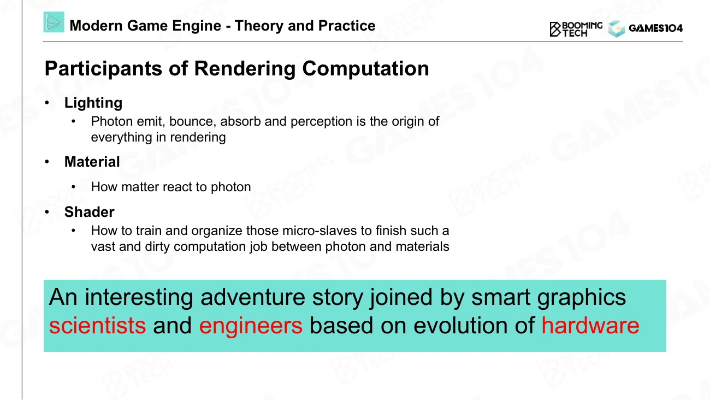
常见坑
把“着色器”理解成“一种材质”→ 实际上着色器是程序，材质是参数集合；同一着色器可生成无数材质实例。
以为渲染方程只是理论、和实时引擎无关 → 后面每一个近似（Blinn-Phong、IBL、Lightmap）都是在它的某一项上做文章。
UE / Unity 落地
UE：材质（Material）本质是节点图，编译后生成 Shader；材质实例（Material Instance）只改参数不重编译，对应“材质是参数、着色器是程序”。
Unity：Shader 文件（ShaderLab）定义渲染管线与属性，Material 资产持有具体贴图和数值。
022. 渲染方程与它的三大挑战
渲染方程（简化写法）是：
\[ L_o(x, \omega_o) = L_e(x, \omega_o) + \int_{\Omega} f_r(x, \omega_i, \omega_o)\, L_i(x, \omega_i)\, (n \cdot \omega_i)\, d\omega_i \]
其中 \(L_o\) 是出射辐射度，\(L_e\) 是自发光，\(f_r\) 是 BRDF（材质如何反射），\(L_i\) 是入射辐射度，\((n \cdot \omega_i)\) 是余弦项，积分域是法线所在半球 \(\Omega\)。
课件把它归结为三个挑战：
- 挑战 1a：可见性（Visibility to Lights）。对每个点，光是否被遮挡？这对应阴影。课件用“向光源投射射线（Ray Casting Toward Light Source）”来说明阴影的开与关。
- 挑战 1b：光源复杂度（Light Source Complexity）。场景里光源一多，每个点都要对所有光源积分。
- 挑战 2：半球积分在硬件上太贵。暴力采样不可行，课件列了三条路：蒙特卡洛（Monte Carlo）采样、推导快速解析解、以及简化材质光学性质与数学表示（只处理方向光、点光、聚光灯）。
- 挑战 3：递归。任何物质都会成为光源（直接光 vs 间接光，即全局光照 GI），要算入射辐射度 \(L_i\) 又得再解一次积分，方程是递归的。
一句话记忆：可见性难、积分贵、递归无底洞。后面所有工程方案，都是针对这三条分别“打补丁”。
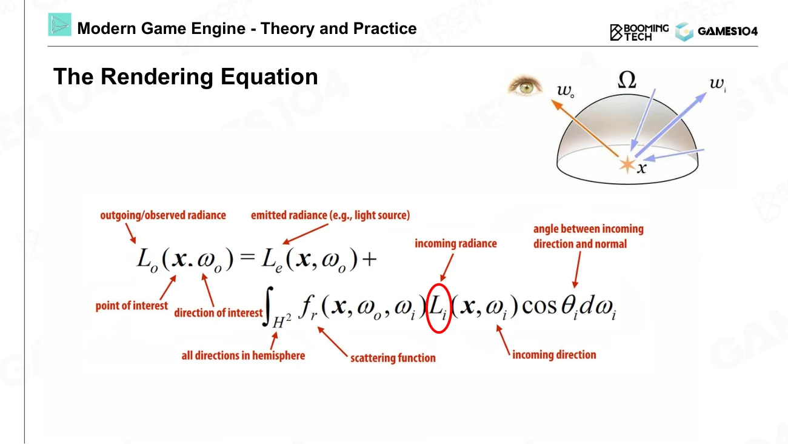
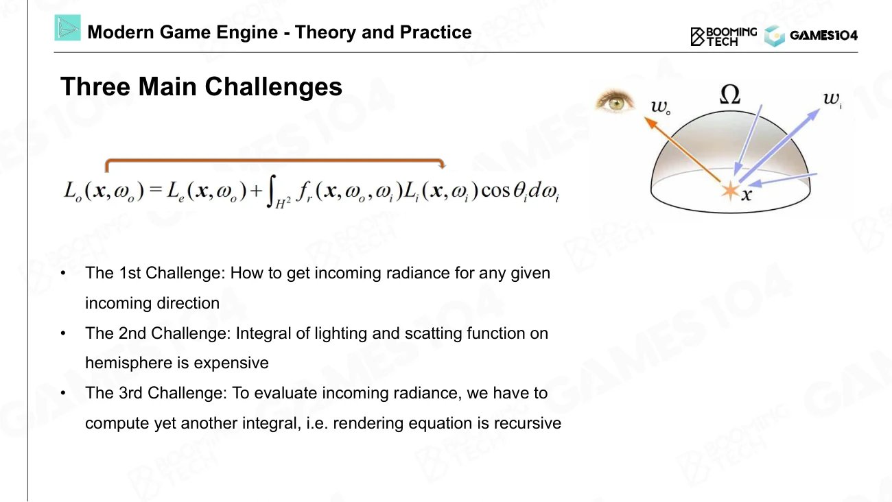
补充说明
课件 P7 还提到“推导快速解析解”和“简化材质表示”，这正是下一节 Blinn-Phong 的伏笔。
常见坑
把“挑战 2”理解成“采样不够快”→ 真正的问题是半球积分维度高、每像素每光源都要算，暴力采样在实时预算里根本放不下。
忽略余弦项 \((n \cdot \omega_i)\) → 它保证掠射角贡献趋近 0，漏掉会导致边缘过亮。
UE / Unity 落地
UE：Lumen 就是针对挑战 3（递归间接光）的实时近似方案；传统前向/延迟管线则用“主光+环境光”回避挑战 1b。
Unity：Built-in 管线的实时光照同样只处理有限实时光源，其余靠烘焙或探针。
033. 经典近似：简单光源 + 环境光 + 环境贴图
既然方程解不动，早期引擎的做法是“先忘掉抽象概念（辐射度、微表面、BRDF 等）”，用一套简单光源方案顶上：
- 主光（Main Light）：多数情况用方向光（Directional Light），特殊场景用点光/聚光灯。它解决挑战 1b 的“光源复杂度”——只算一盏主光。
- 环境光（Ambient Light）：用一个常数来“黑客”掉复杂的半球辐照度均值。课件明确说它是“一个常数代表复杂半球辐照度的均值”，并且图形 API 直接支持。
- 环境贴图（Environment Map）：用来增强光滑表面反射，并用环境贴图的 mipmap 来近似表面粗糙度——这是基于图像的光照（Image-Based Lighting, IBL）的早期探索。
课件 P13 用“频率”把三者统一起来：主光/主导光是低频的辐照度球面分布，环境贴图是高频部分。也就是说，直接光给方向性，环境光给整体亮度，环境贴图给反射细节。
这套组合拳就是后面“基础着色方案”的骨架：简单光源 + 环境光 + Blinn-Phong 材质 + 阴影贴图，对应 Doom 3 时代的画质。
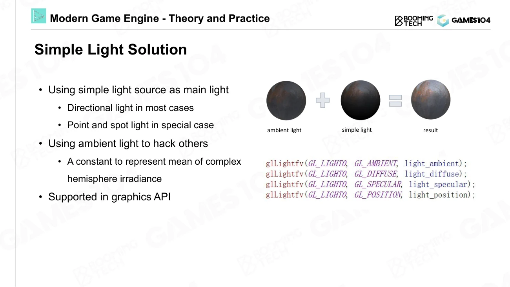
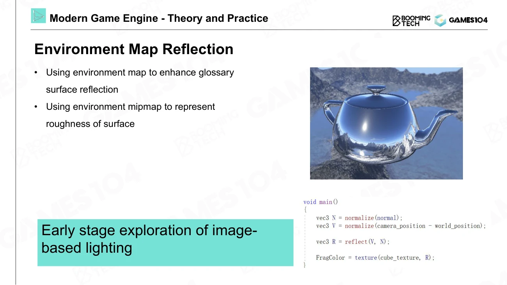
常见坑
把环境光当成“真实存在的均匀光源”→ 它只是半球积分的常数近似，会让阴影里也发亮、失去方向感。
环境贴图不做 mip 就直接采样 → 光滑表面反射会闪烁/走样，粗糙表面也不会变模糊。
UE / Unity 落地
UE：Directional Light + Sky Light（环境光/环境立方体贴图）就是这套组合的现代版；Sky Light 可来自立方体贴图或捕获场景。
Unity：Directional Light + Ambient（Environment Lighting 的 Skybox/Color/Gradient）对应环境光；Reflection Probe 对应环境贴图反射。
044. Blinn-Phong 材质：便宜好用的第一代方案
Blinn-Phong 是在 Phong 模型上把“反射方向与视线方向的夹角”换成“半程向量与法线的夹角”，高光项变成：
\[ L_{spec} = k_s \, (n \cdot h)^{p} \, L_i \, \max(0, n \cdot l) \]
其中 \(h = \mathrm{normalize}(l + v)\) 是光源方向与视线方向的半程向量，\(p\) 是高光指数（越大越锐利），\(k_s\) 是高光强度。漫反射项是 \(k_d \, L_i \, \max(0, n \cdot l)\)。
它的优点是便宜、稳定、参数直观，所以成为“第一波 3A 画质”的基础（课件 P20–P24 用《刺客信条》系列展示画质演进）。
但课件 P15 明确列了它的三个问题：
- 不能量守恒（Not energy conservative）：反射出去的能量可能大于入射能量，导致材质“发亮”。
- 在光线追踪里不稳定（Unstable in ray-tracing）：不守恒的模型会让路径追踪收敛慢、噪声大（课件左右对比图：左为非能量守恒模型噪声大，右为能量守恒模型）。
- 难以建模复杂真实材质：塑料感强，金属、布料、皮肤都做不好。
所以后来才有 PBR（基于物理的渲染）取代它。但理解 Blinn-Phong 仍然重要：它是理解“高光 = 半程向量”的起点，也是很多引擎里“低配/移动端”回退路径。
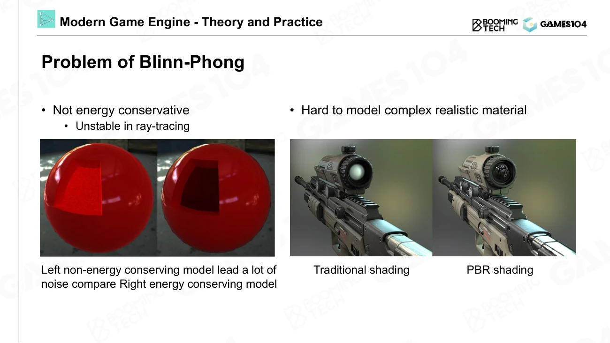
常见坑
法线没归一化 → 高光位置偏移、亮度异常 → 着色前对法线和半程向量都做 normalize。
高光指数 \(p\) 直接当“光滑度”用 → 它和粗糙度不是线性关系，PBR 里应使用 roughness 映射到指数。
把 \(k_s\) 调得很大 → 违反能量守恒，物体看起来像自发光 → 控制 \(k_d + k_s \le 1\) 或改用 PBR。
UE / Unity 落地
UE：默认材质已是 PBR；但自定义节点里仍可手写 Blinn-Phong 高光用于风格化或低配。
Unity：Built-in 的 Standard 是 PBR；旧版 Shader 或移动端 Unlit/Simple Lit 常见 Blinn-Phong 近似。
Blinn-Phong 高光核心几行（伪代码）（hlsl）
float3 L = normalize(lightDir);
float3 V = normalize(viewDir);
float3 H = normalize(L + V);
float NdotL = saturate(dot(N, L));
float NdotH = saturate(dot(N, H));
float3 diffuse = kd * baseColor * NdotL;
float3 specular = ks * pow(NdotH, shininess) * NdotL;
float3 color = diffuse + specular + ambient;055. 阴影：从阴影贴图到级联、PCF、PCSS、VSSM
阴影的本质是“光被不透明物体挡住的空间”。课件先提了三种已过时的方法（平面阴影 planar shadow、阴影体 shadow volume、投影纹理 projective texture），然后重点讲阴影贴图（Shadow Map）：从光源视角渲染一张深度图，着色时把像素变换到光源空间比较深度，判断是否被遮挡。
阴影贴图有两个固有问题（P18）：纹理分辨率有限、深度精度有限。由此衍生出一系列技术：
- 级联阴影（Cascade Shadow）：把视锥体切成多段，每段渲染一张阴影贴图，像素着色器选择分辨率最匹配的那张。它主要解决透视走样（perspective aliasing）——近处像素少、远处像素多导致的阴影锯齿。级联层之间会有接缝，需要在混合带里线性插值（P72）。优点是快、效果好；缺点是无法做高质量面光源软阴影、没有彩色阴影、半透明表面会投出不透明阴影。
- PCF（Percentage Closer Filter）：解决阴影贴图锯齿。在阴影贴图里对当前像素周围多次采样并比较深度，把结果平均，得到更平滑的明暗过渡。
- PCSS（Percentage Closer Soft Shadow）：解决 PCF 的走样与欠采样，同时产生接触硬化的软阴影：先搜索遮挡物平均深度估计半影宽度，再做 PCF。
- VSSM（Variance Soft Shadow Map）：基于切比雪夫不等式，用深度的均值和方差直接近似“有多少比例被遮挡”，避免 PCSS 的区域搜索，实时性更好。
课件 P78 总结“流行 3A 渲染”的三件套：Lightmap + Light Probe、PBR + IBL、Cascade Shadow + VSSM。
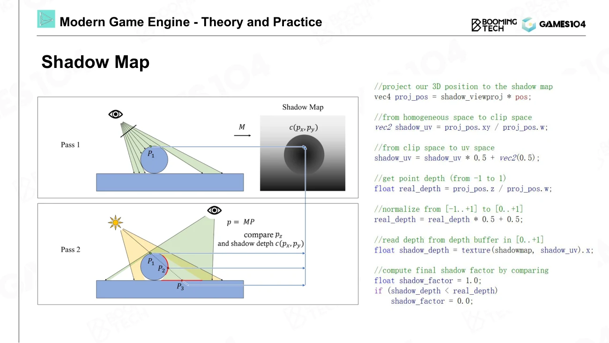
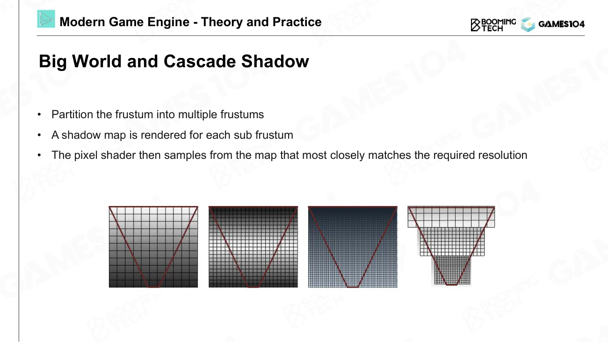
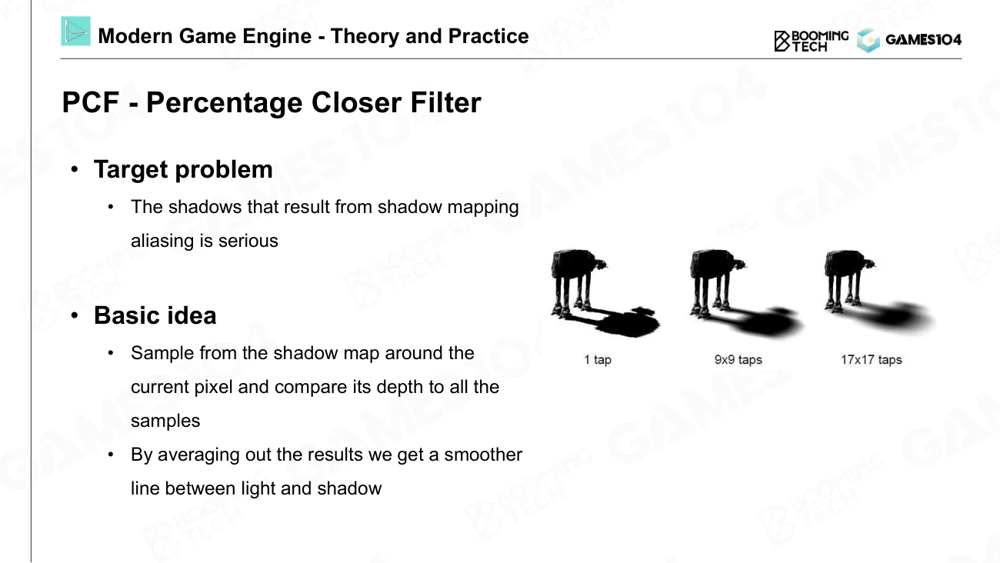
补充说明
课件 P73 特别指出级联阴影“几乎无法生成高质量面光源阴影、没有彩色阴影”，这是它作为实时方案的固有局限。
常见坑
阴影贴图深度偏移（bias）设太小 → 阴影痤疮（shadow acne，表面出现条纹）→ 增大 bias 或用法线偏移。
bias 设太大 → 阴影脱离物体（peter-panning）→ 在保证无 acne 的前提下尽量小。
级联层接缝明显 → 混合带太窄或未插值 → 扩大 blend band 并在着色器里线性插值两层结果。
UE / Unity 落地
UE：Directional Light 的 Cascaded Shadow Maps 设置（Dynamic Shadow Distance、Num Dynamic Shadow Cascades）；软阴影可用 Shadow Map Method 里的 PCF/VSSM。
Unity：Quality Settings 里的 Shadow Cascades、Shadow Distance；URP/HDRP 提供 PCF/PCSS 等软阴影选项。
066. 预计算全局光照：Lightmap 与 Light Probe
间接光（Indirect Illumination）对画面真实感至关重要（P26 对比直接光 vs 直接+间接光）。但实时算递归积分太贵，于是工业界用预计算：离线把场景的间接光烘出来，运行时只查表。
要表示间接光，课件提出三个要求：压缩率高（一个关卡要存上百万个辐射度探针）、易于和材质函数做积分、能用多项式与 BRDF 卷积。答案就是球谐函数（Spherical Harmonics, SH）：
- SH 是定义在球面上的函数系，类似傅里叶变换但定义在球面。
- 复杂的球面积分可以用低阶多项式近似（课件 P30 说“二次多项式”即可近似）。
- 通常只存 SH1（一阶，4 个系数） 就能表示低频辐照度，压缩后每个探针只需 RGBA8 颜色，着色器里做简单漫反射着色即可重建。
工程上有两条落地路径：
- Lightmap（光照贴图）：把场景参数化成巨大的 2D 图集，离线光照农场为所有表面点计算辐照度探针，压缩成 SH 系数存进 2D 图集纹理。为了省 texel，常用低模代理几何（low-poly proxy）、减少 UV 岛；细节再用 HBAO 补高频。优点是运行时极高效、能烘出很细的 GI 细节；缺点是预计算又长又贵、只能处理静态场景和静态光、包体和显存有存储成本。
- Light Probe（光照探针）：在游戏空间里撒探针（可由地形/道路或体素生成），动态物体在运行时插值附近探针的 SH。配合 Reflection Probe（反射探针） 还能处理高光。优点是运行时高效、静态动态都能用、漫反射和高光都能管；缺点是需要预计算、无法处理精细 GI（比如重叠结构上的软阴影）。
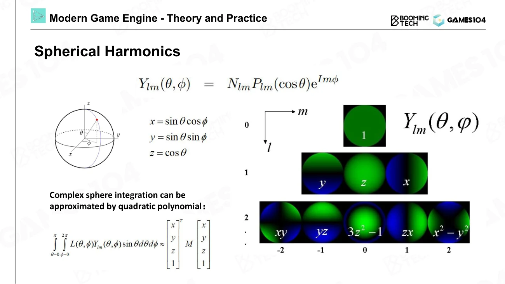
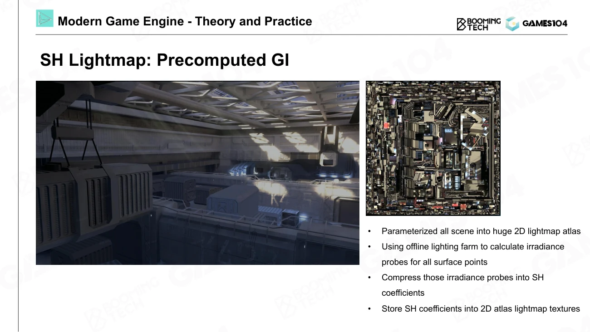
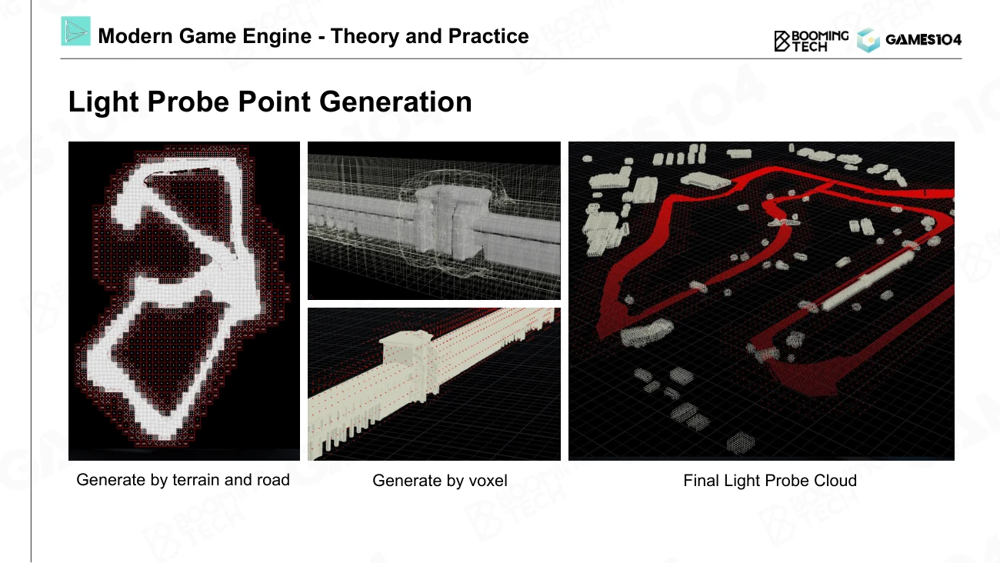
补充说明
课件 P41 明确列出 Lightmap 的优缺点，P45 列出 Light Probe + Reflection Probe 的优缺点，两者是互补关系而非替代。
常见坑
Lightmap UV 重叠或密度不足 → 光照出现接缝/漏光 → 检查 UV 岛是否重叠、调整 Lightmap Resolution。
动态物体用了 Lightmap 但没配 Light Probe → 动态物体全黑或亮度不对 → 给动态物体启用 Light Probe 插值。
Light Probe 布置太稀 → 动态物体在探针之间移动时亮度跳变 → 加密探针或使用四面体插值。
UE / Unity 落地
UE：Lightmass 烘焙 Lightmap；Light Probe 对应 Indirect Lighting Cache / Volumetric Lightmap；Reflection Capture 对应反射探针。
Unity：Lighting 窗口的 Baked GI 生成 Lightmap；Light Probe Group 组件布置探针；Reflection Probe 组件做反射。
077. PBR：微表面理论、BRDF 与两种工作流
PBR（Physically Based Rendering）用微表面理论（Microfacet Theory）建模材质：表面由无数微小镜面组成，BRDF 由三部分构成：
- 法线分布函数 NDF（Normal Distribution Function）：微表面法线朝向半程向量的概率。课件对比了 Beckmann（红）、Phong（蓝）、GGX（绿）三种分布，GGX 尾部更长，高光更自然，是工业主流。
- 几何衰减项 G（Geometric Attenuation）：微表面之间的自遮挡（self-shadowing）和遮蔽。
- 菲涅尔方程 F（Fresnel Equation）：反射率随视角变化，掠射角反射更强。
课件还提到 MERL BRDF 数据库（实测材质库）用于验证模型。工业界最成功的是 Disney Principled BRDF，它遵循几条原则：参数直观而非物理、参数尽量少、参数在合理范围内归一到 0–1、允许在合理时超出范围、所有参数组合都尽量稳健。
落到贴图工作流，有两种：
- Specular-Glossiness（SG）：Diffuse（RGB, sRGB）+ Specular（RGB, sRGB）+ Glossiness（灰度, 线性）。
- Metallic-Roughness（MR）：Base Color（RGB, sRGB）+ Roughness（灰度, 线性）+ Metallic（灰度, 线性）。
课件 P59 对比了 MR 与 SG：MR 更易作者化、不易因错误的介电质 F0 数据出错、贴图内存更省（Metallic 和 Roughness 都是灰度图）；缺点是无法在贴图里控制介电质 F0（多数实现有 specular 覆盖参数）、边缘伪影更常见。两者可以互相转换（P58）。
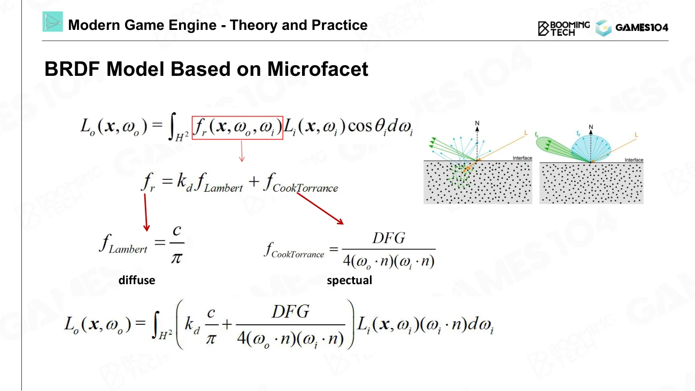
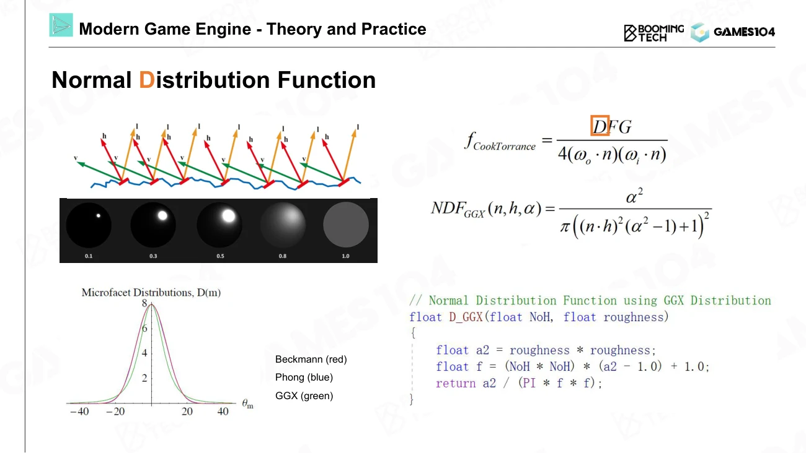
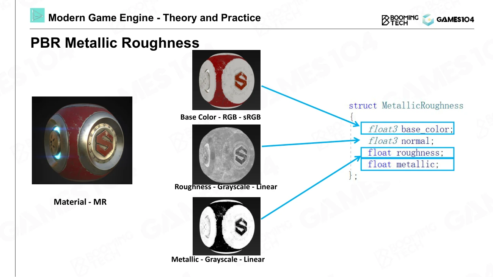
补充说明
课件 P53 的 Disney 原则是判断一个 PBR 实现是否“好用”的重要标准，值得记住。
常见坑
把 sRGB 贴图当线性数据用（或反之）→ 颜色/粗糙度整体偏亮或偏暗 → Base Color 用 sRGB，Roughness/Metallic 必须线性。
Metallic 贴图不是 0 或 1 而是中间值 → 金属/非金属混合导致能量不守恒 → 除非做过渡，尽量二值化。
Roughness 太低 + 环境贴图没预过滤 → 高光噪点/闪烁 → 使用预过滤的 IBL 贴图并匹配 mip。
UE / Unity 落地
UE：默认就是 Metallic-Roughness 工作流，材质节点有 Base Color、Metallic、Roughness、Specular 输入。
Unity：Standard/URP Lit/HDRP Lit 均为 Metallic-Roughness；SG 工作流在旧版 Standard（Specular Setup）中可选。
088. IBL 与着色器管理：把 PBR 跑起来
IBL（Image-Based Lighting） 用一张表示全方向远处光照的图像来照亮物体。直接解渲染方程需要蒙特卡洛大量采样，太慢。工业界的做法是 split-sum 近似：把积分拆成“光照项”和“BRDF 项”的乘积。
- 光照项：预过滤环境贴图（pre-filtered environment map）。对不同的粗糙度做不同模糊程度的预过滤，运行时按 roughness 采样对应 mip。
- BRDF 项：预计算一张 BRDF LUT，横轴是 \(n \cdot v\)，纵轴是 roughness，存两个系数（scale 和 bias），运行时直接查表。
这样 PBR + IBL 在运行时只是几次贴图采样，非常便宜（P68 对比 IBL 开/关效果）。
最后是着色器管理。课件用“着色器的海洋/爆炸”形容问题：美术会创建无限多的着色器。引擎的答案是 Uber Shader + 变体（Variant）：
- Uber Shader 是把所有可能的光源类型、渲染 pass、材质类型组合进一个超大着色器，共享大量状态和代码。
- 通过预定义宏编译出许多变体短着色器，运行时按需选择。
- 代价是变体数量爆炸（编译时间、包体），所以需要变体剔除/按需编译。
跨平台方面，课件提到着色器交叉编译（Cross-Compiler）：一份源码编译到不同图形 API（HLSL/GLSL/SPIR-V/Metal 等）。
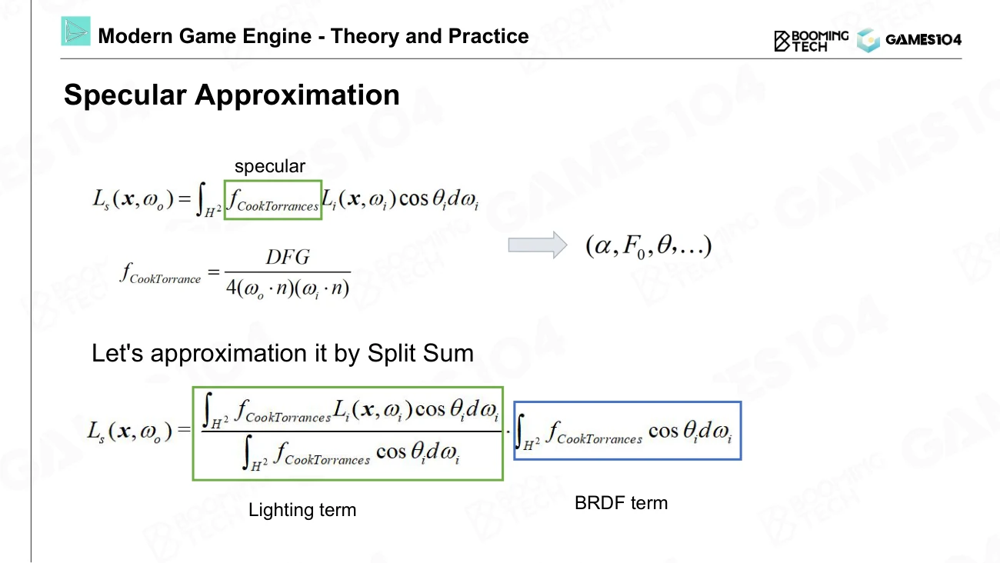
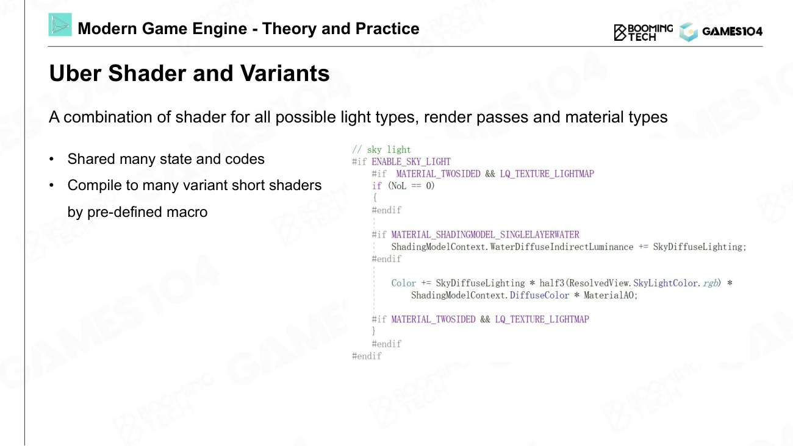
补充说明
课件 P80 之后提到 GPU 演进（compute/mesh/ray-tracing shader）和实时 GI（SSGI、SDF GI、VXGI、RTX GI），是这一讲之后的“下一波画质”伏笔。
常见坑
IBL 预过滤贴图 mip 与 roughness 映射不对 → 高光过锐或过糊 → 检查 roughness→mip 的映射曲线。
BRDF LUT 用了错误的坐标轴 → 高光能量整体偏暗/偏亮 → 确认横轴 \(n \cdot v\)、纵轴 roughness。
Uber Shader 变体全量编译 → 首次进入游戏卡顿、包体巨大 → 启用变体收集/剔除，只编译实际用到的组合。
UE / Unity 落地
UE：Sky Light 的 Cubemap 会生成预过滤的 IBL；材质里用 Reflection Capture 做反射。
Unity：Reflection Probe 生成预过滤 cubemap；URP/HDRP 的 Lit Shader 内置 BRDF LUT 与 IBL。
引擎对照表
| 概念 / 效果 | Unreal Engine | Unity |
|---|---|---|
主光 + 环境光 | Directional Light + Sky Light | Directional Light + Environment Lighting（Skybox/Color/Gradient） |
阴影贴图 / 级联阴影 | Cascaded Shadow Maps（Directional Light 设置） | Shadow Cascades（Quality Settings） |
软阴影 | Shadow Map Method: PCF / VSSM | URP/HDRP 的 Soft Shadows（PCF/PCSS） |
烘焙 GI | Lightmass + Lightmap + Volumetric Lightmap | Baked GI + Lightmap + Light Probe Group |
反射探针 | Reflection Capture | Reflection Probe |
PBR 工作流 | Metallic-Roughness（默认） | Standard/URP Lit/HDRP Lit（Metallic-Roughness） |
IBL | Sky Light Cubemap + Reflection Capture | Reflection Probe + Lit Shader 内置 IBL |
着色器变体 | Material Shader Variants / Permutation | Shader Variants / Multi_Compile |
术语双语表
| English | 中文 | 说明 |
|---|---|---|
| Rendering Equation | 渲染方程 | 描述出射辐射度等于自发光加半球入射辐射度按 BRDF 与余弦项积分。 |
| Radiance / Irradiance | 辐射度 / 辐照度 | 辐射度是某方向单位立体角单位面积功率，辐照度是入射到表面的单位面积功率。 |
| BRDF | 双向反射分布函数 | 描述材质如何把入射方向的光反射到出射方向。 |
| Blinn-Phong | Blinn-Phong 光照模型 | 用半程向量与法线夹角计算高光的经验模型，便宜但不能量守恒。 |
| Shadow Map | 阴影贴图 | 从光源视角渲染深度图，着色时比较深度判断遮挡。 |
| Cascade Shadow | 级联阴影 | 把视锥体分段、每段一张阴影贴图，解决大世界透视走样。 |
| PCF / PCSS / VSSM | 百分比渐近过滤 / 软阴影 / 方差软阴影 | 阴影贴图抗锯齿与软阴影的三种递进技术。 |
| Spherical Harmonics (SH) | 球谐函数 | 定义在球面上的函数系，用低阶系数压缩低频辐照度。 |
| Lightmap / Light Probe | 光照贴图 / 光照探针 | 预计算 GI 的两种落地方式：表面 texel 与空间点。 |
| Microfacet / NDF / G / F | 微表面理论 / 法线分布 / 几何项 / 菲涅尔 | PBR BRDF 的三要素。 |
| IBL / Split Sum | 基于图像的光照 / 拆分求和近似 | 把环境光积分拆成预过滤贴图与 BRDF LUT 两项。 |
| Uber Shader / Variant | 超级着色器 / 变体 | 用一个超大着色器加宏编译出大量变体来管理海量材质。 |
课后练习
01 用自己的话解释渲染方程的三大挑战，并各举一个本讲提到的工程应对方案。
查看答案
提示：
从可见性、积分、递归三个角度想。
挑战 1a 可见性：光是否被遮挡，用阴影贴图/级联阴影解决；挑战 1b 光源复杂度：光源太多，用主光+环境光+环境贴图简化；挑战 2 半球积分昂贵：用 Blinn-Phong 解析式、蒙特卡洛或简化材质；挑战 3 递归（间接光）：用预计算 GI（Lightmap/Light Probe）或实时 GI（Lumen/RTX GI）。
02 写出 Blinn-Phong 的高光项，并说明为什么它“不能量守恒”。
查看答案
提示：
看 \(k_s\) 和 \(k_d\) 是否可以独立调大。
高光项为 \(k_s (n \cdot h)^p L_i \max(0, n \cdot l)\)，其中 \(h = \mathrm{normalize}(l+v)\)。不守恒是因为 \(k_s\) 与 \(k_d\) 可独立设置，二者之和可以大于 1，反射能量超过入射能量；且高光项没有归一化因子，指数 \(p\) 改变时总能量也会变。
03 级联阴影解决什么问题？它又带来什么新问题，怎么缓解？
查看答案
提示：
透视走样、层间接缝。
级联阴影把视锥体分成多段，每段一张阴影贴图，解决大世界中近处像素少、远处像素多导致的透视走样。新问题是级联层之间分辨率不匹配产生可见接缝，缓解方法是在混合带里对两层阴影结果做线性插值。
04 Lightmap 和 Light Probe 分别适合什么对象？各写一条优点和一条缺点。
查看答案
提示：
静态表面 vs 动态物体。
Lightmap 适合静态表面：优点是运行时极高效、能烘出很细的 GI 细节；缺点是预计算又长又贵、只能处理静态场景和静态光、有存储成本。Light Probe 适合动态物体：优点是运行时高效、静态动态都能用、漫反射和高光都能管；缺点是需预计算、无法处理精细 GI（如重叠结构上的软阴影）。
05 IBL 的 split-sum 近似把积分拆成哪两项？各自预计算成什么？
查看答案
提示：
光照项和 BRDF 项。
拆成光照项和 BRDF 项。光照项预计算为预过滤环境贴图（按 roughness 做不同模糊程度的 mip）；BRDF 项预计算为 BRDF LUT（横轴 \(n \cdot v\)、纵轴 roughness，存 scale 和 bias 两个系数）。运行时两者相乘即得近似结果。